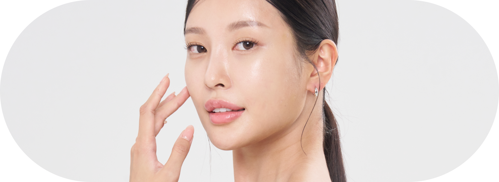
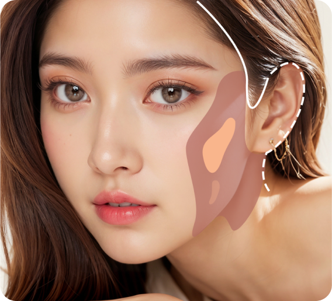

안면윤곽
예쁜 라인만 부드럽게 남기다

셀러블153 안면윤곽
타이트한 윤곽 수술
안면윤곽 기본 정보
안면윤곽 대상
-
수술시간1시간 ~ 2시간
-
치료방문2회~3회
-
마취방법전신마취
-
회복기간7일~14일
-
입원1일 입원
-
실밥제거10~14일째
- 윤곽 수술 전 피부 처짐이 있는 경우 (팔자 윗부분, 입술 옆부분)
- 윤곽 수술 전 볼패임이 심한 경우
- 윤곽 수술 후 피부 처짐에 대한 걱정이 많은 경우
- 얼굴에 전반적으로 살이 많은 경우
- 윤곽 수술 후 드라마틱한 효과와 빠른 회복을 원하는 경우
내 얼굴에 알맞게 남기다, 셀러블153 안면윤곽
심미적으로 완벽한 부분만 깎다. 예쁜 얼굴 라인을 위해 정확한 수술 플랜을 수립하여
신경손상이 적게 뼈의 불필요한 절제없이 꼭 필요한 수술만 진행
신경손상이 적게 뼈의 불필요한 절제없이 꼭 필요한 수술만 진행
- 
셀러블153 안면유곽의 특징
-
작고 막힌 눈을 교정하여 크고
시원한 눈으로 변화 -
적은 부기 및 일상으로
빠른 복귀 가능 -
얼굴과 눈의 비율을 고려한 앞, 윗 트임
및 뒤, 밑트임 디자인 -
흉터 최소화를 위해 안쪽으로
절개하여 흉터 예방
사각턱 절제술
흉터 걱정 없이 자연스럽게
-
사각턱 절제술얼굴의 하악이 크게 되면 얼굴전체가 커 보이기 때문에 얼굴을 작게 하기 위해 턱의 각의 일부를 자라내는 수술. 효과는 옆의 라인에서 얼굴을 작아 보이게 하며 정면에서도 갸름한 얼굴형을 만드는데 효과적이다.
-
수술방법하악 신경이 나오는 아래 부위에서 사각턱을 포함한 턱의 뒤 부분까지 긴 곡선으로 뼈를 절제 해 준다.
피질 연마술
흉터 걱정 없이 자연스럽게
-
사각턱 절제술사각턱 절제술과 함께 시행되는 수술 또는 단독으로 시행되는 수술이다. 이는 하악 부분의 뼈의 두께를 얇게 갈아줌으로 인해서 정면에서 갸름해 보이고 하악 부위가 평면적으로 바뀌면서 훨씬 하악의 선이 분명해지는 것을 목적으로 하고 있다.
-
수술방법입안 절개를 통해서 두껍게 튀어 나온 하악각의 피질 부위를 얇게 갈아 주는 방식으로 출혈의 위험성이 적은 것에 비해 효과는 좋은 편이다.
피질 절골술
흉터 걱정 없이 자연스럽게
-
사각턱 절제술사각턱 성형술의 일부로서 정면 효과를 많이 보고자 하는 경우이거나 하악의 두께가 심하게 두꺼워져 있는 경우 하악의 외반을 벗겨내는 시술
-
수술방법입안의 안쪽 앞 부위를 절개하여 하악 신경선을 다치지 않게 조심히 아래부위의 각을 자연스러운 라인으로 절제하여 준다. 절제한 뒤에는 비대칭을 교정하면서 턱끝을 연마해주면서 완성도를 높여준다.
턱끝각 절제술
흉터 걱정 없이 자연스럽게
-
사각턱 절제술턱끝이 뭉퉁하거나 튀어 나온 경우에는 얼굴이 투박해 보이며 사각턱 절제술을 기존에 심하게 절제한 환자의 경우 상대적으로 턱끝이 넓어 보이며 투박해 보일 수 있다.
-
수술방법입안의 안쪽 앞 부위를 절개하여 하악 신경선을 다치지 않게 조심히 아래부위의 각을 자연스러운 라인으로 절제하여 준다. 절제한 뒤에는 비대칭을 교정하면서 턱끝을 연마해주면서 완성도를 높여준다.
- 사각턱 성형술 케이스
-
-
전 후 CT 1.
 사진 설명) 사각턱 절제술과 함께 피질 연마술을 시행한 전, 후 CT.
사진 설명) 사각턱 절제술과 함께 피질 연마술을 시행한 전, 후 CT.
하악부위의 정면에서의 효과는 튀어 나온 하악각이 절제되어 있고
수술 전 울퉁불퉁한 면은 연마되어 정면에서 갸름한 효과를 볼 수 있다. -
전 후 CT 2.사진 설명) 사각턱 절제술과 피질 절골술 그리고 턱끝 절제술을 함께 시행한 환자 정면 전,후 CT
정면의 전, 후 에서 하악의 외반부위의 볼륨이 많이 줄어 드는 것을 알 수 있으며 턱끝의 각을 절제한 후 턱끝이 갸름한 모양을 나타내는데 효과적이다 -
전 후 CT 3.사진 설명) 사각턱 절제술과 피질 절골술 그리고 턱끝 절제술을 함께 시행한 환자 45도 전,후 CT
사각턱 성형술로 인해 옆라인과 턱끝의 모양이 핀 고정 없이 갸름한 모양으로 만들 수 있다.
-
- 광대 축소술
-
-
광대 축소술 ( 관골 성형술 )얼굴의 중심을 이루는 관골은 얼굴 중앙부에서 얼굴의 넓이를 결정하게 된다.
너무 넒은 경우에는 남성적으로 보이며 인상이 너무 사나워 보일 수 있다. 이러한 점들을 개선하기 위해서 효과적인 방법이다.수술 방법입안절개와 귀앞 절개를 동시에 이요해서 접근한다. 관골의 앞부위에서 뼈의 L자형 절개를 통해서 뼈의 일부를 절제해 낸다.
귀 앞 절개를 통해 관골궁의 뒷쪽 부위를 자르고 뼈를 전체적으로 앞쪽, 안쪽, 윗쪽 방향으로 이동시킨뒤 앞과 뒤에 고정 핀을 이용해서 고정해 준다. -
1사각턱 절제술과 광대 축소술을 함께 시행한 환자의 CT 전, 후
긴곡선 절제술을 시행하고 외반 연마술을 시행하였으며 관골 성형술로 뼈 절제술 후 앞과 뒤의 고정을 시행하였다. -
2광대 축소술 후 아래에서 본 CT.
수술 후 얼굴의 폭이 많이 줄어 들어 있음을 확인 할 수 있다. 앞 부분의 뼈 절제와 광대뼈의 이동 후 고정으로 인해 얼굴의 폭이 많이 줄어 들어 있음을 확인할 수 있다.
-